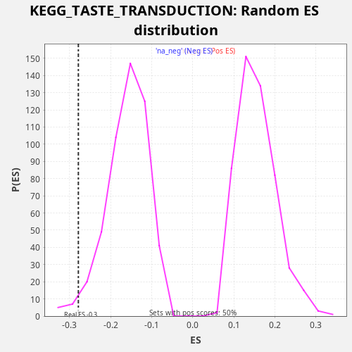

Profile of the Running ES Score & Positions of GeneSet Members on the Rank Ordered List
The same image in compressed SVG format
| Dataset | CCLE |
| Phenotype | NoPhenotypeAvailable |
| Upregulated in class | na_neg |
| GeneSet | KEGG_TASTE_TRANSDUCTION |
| Enrichment Score (ES) | -0.2787258 |
| Normalized Enrichment Score (NES) | -1.7329041 |
| Nominal p-value | 0.02008032 |
| FDR q-value | 0.07977972 |
| FWER p-Value | 0.859 |
| SYMBOL | RANK IN GENE LIST | RANK METRIC SCORE | RUNNING ES | CORE ENRICHMENT | |
|---|---|---|---|---|---|
| 1 | TAS1R3 | 45 | 9.184 | 0.0336 | No |
| 2 | PDE1A | 755 | 0.050 | 0.0357 | No |
| 3 | PRKACB | 2844 | 0.003 | -0.0276 | No |
| 4 | TAS2R31 | 3729 | 0.002 | -0.0338 | No |
| 5 | PRKACA | 5543 | 0.000 | -0.0840 | No |
| 6 | TAS2R14 | 5645 | 0.000 | -0.0531 | No |
| 7 | ITPR3 | 5912 | 0.000 | -0.0300 | No |
| 8 | GNB1 | 6962 | 0.000 | -0.0440 | No |
| 9 | GNG13 | 8422 | 0.000 | -0.0774 | No |
| 10 | TAS2R19 | 10057 | -0.000 | -0.1192 | No |
| 11 | PRKX | 11503 | -0.000 | -0.1519 | No |
| 12 | GNAS | 11925 | -0.000 | -0.1362 | No |
| 13 | ADCY6 | 12807 | -0.000 | -0.1422 | No |
| 14 | CACNA1B | 14173 | -0.001 | -0.1712 | No |
| 15 | KCNB1 | 16442 | -0.006 | -0.2430 | Yes |
| 16 | PLCB2 | 16797 | -0.008 | -0.2241 | Yes |
| 17 | ADCY4 | 17295 | -0.012 | -0.2119 | Yes |
| 18 | TAS2R20 | 18056 | -0.024 | -0.2122 | Yes |
| 19 | CACNA1A | 18106 | -0.024 | -0.1788 | Yes |
| 20 | TAS2R38 | 18117 | -0.025 | -0.1436 | Yes |
| 21 | GRM4 | 18241 | -0.028 | -0.1137 | Yes |
| 22 | TAS2R10 | 18302 | -0.030 | -0.0808 | Yes |
| 23 | SCNN1G | 19503 | -0.136 | -0.1020 | Yes |
| 24 | TAS2R4 | 20364 | -1.051 | -0.1071 | Yes |
| 25 | TAS2R5 | 20391 | -1.114 | -0.0726 | Yes |
| 26 | SCNN1B | 20649 | -2.925 | -0.0491 | Yes |
| 27 | GNB3 | 20852 | -7.026 | -0.0229 | Yes |
| 28 | SCNN1A | 20865 | -7.371 | 0.0122 | Yes |

{kind=link}
{kind=link}